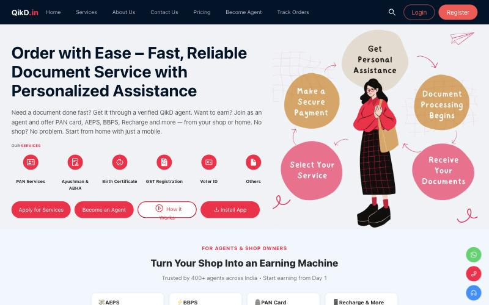

First-time users couldn't see how the service worked.
- Which service to pick, what happens after paying, and how they'd get updates were all unclear.
QikD connects people with verified agents for documents like PAN cards. First-time users didn't understand how to use it.

For a service people use rarely, clarity is the product. If someone can't see what happens after they pay, they don't start.